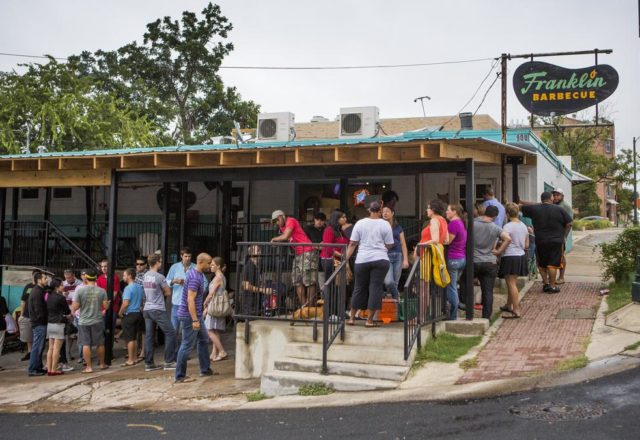

Franklin's Barbeque

|  |
Description
Franklin Barbecue is a barbecue restaurant located in Austin, Texas, founded in 2009 by Aaron Franklin. The restaurant has attracted a national following.
In 2009, Aaron Franklin launched the restaurant in a trailer. The restaurant has sold out of brisket every day since its establishment. Franklin Barbecue moved to a brick and mortar location in 2011. The restaurant appeared on Anthony Bourdain: No Reservations in September 2012. In 2014, Texas Monthly listed the restaurant on its list of "the 50 Best BBQ Joints in the World." That July, President Barack Obama visited the restaurant and bought lunch for those in line behind him. The restaurant is prominently featured in a scene from the 2014 Jon Favreau film Chef, with speaking cameos by owner Aaron Franklin and general manager Benji Jacob.
How To Get There
Moovit is really useful to get travel around USA.
The Moovit app combines information from public transit operators and authorities with live information from the user community to offer travelers a real-time picture, including the best route for their journey.
Other places to visit in Austin, Texas:
- Zilker Metropolitan Park Attractions
- Lady Bird Lake
- Barton Springs Pool